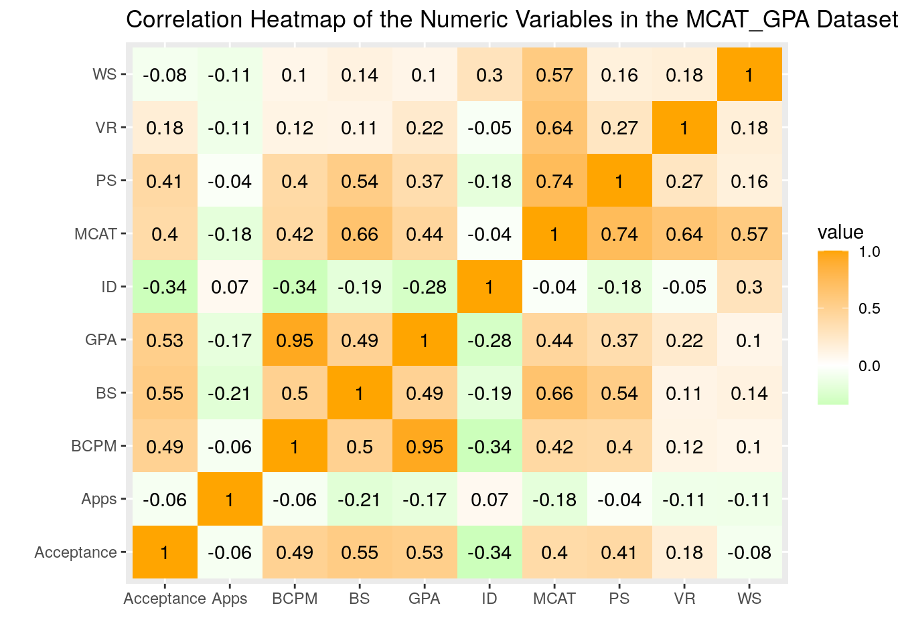
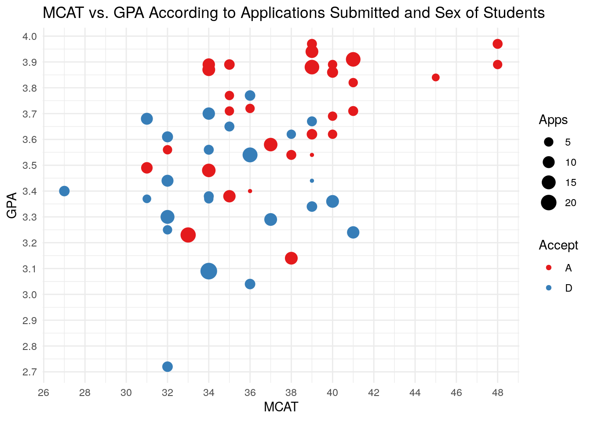
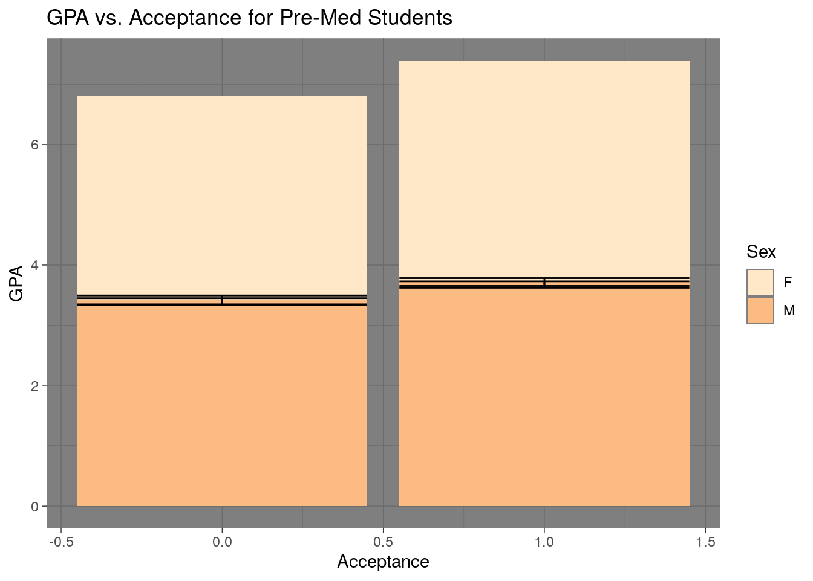
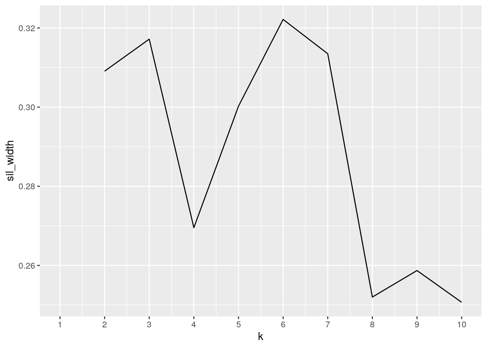
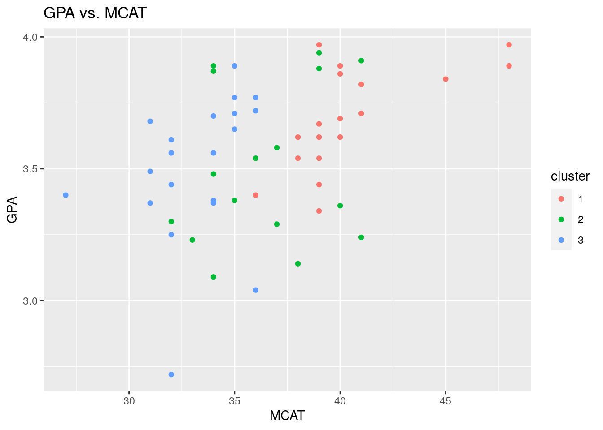
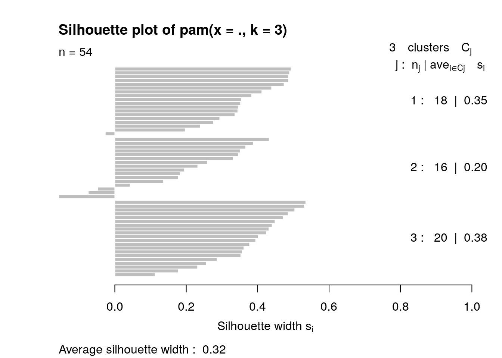
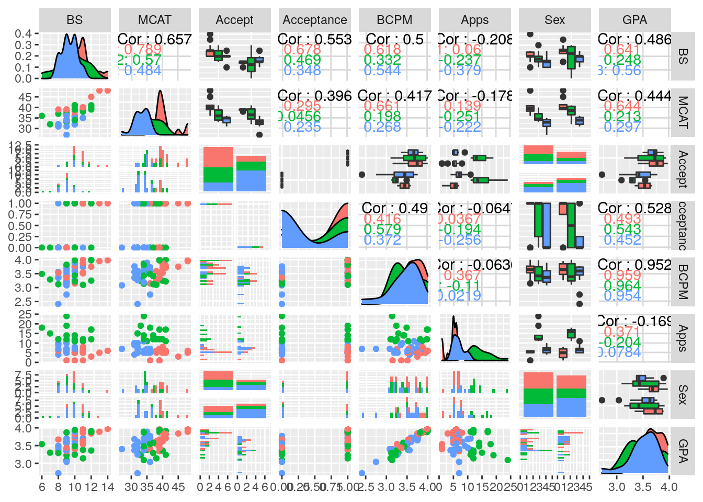

library(tidyverse)## ── Attaching packages ───────────────────────────────────────────────────────────────────────────────────────────────────────────────────────────────────────── tidyverse 1.3.0 ──## ✔ ggplot2 3.3.0 ✔ purrr 0.3.3
## ✔ tibble 2.1.3 ✔ dplyr 0.8.3
## ✔ tidyr 1.0.0 ✔ stringr 1.4.0
## ✔ readr 1.3.1 ✔ forcats 0.4.0## ── Conflicts ──────────────────────────────────────────────────────────────────────────────────────────────────────────────────────────────────────────── tidyverse_conflicts() ──
## ✖ dplyr::filter() masks stats::filter()
## ✖ dplyr::lag() masks stats::lag()library(knitr)
library(tidyr)
library(ggplot2)
library(dplyr)
Student_GPA <- read_csv("~/Project 1 info/Student_GPA.csv")## Parsed with column specification:
## cols(
## ID = col_double(),
## Accept = col_character(),
## Acceptance = col_double(),
## Sex = col_character(),
## BCPM = col_double(),
## GPA = col_double(),
## Apps = col_double()
## )glimpse(Student_GPA)## Observations: 55
## Variables: 7
## $ ID <dbl> 1, 2, 3, 4, 5, 6, 7, 8, 9, 10, 11, 12, 13, 14, 15, 16, 17,…
## $ Accept <chr> "D", "A", "A", "A", "A", "A", "A", "D", "A", "A", "A", "A"…
## $ Acceptance <dbl> 0, 1, 1, 1, 1, 1, 1, 0, 1, 1, 1, 1, 1, 0, 0, 1, 0, 1, 0, 1…
## $ Sex <chr> "F", "M", "F", "F", "F", "M", "M", "M", "F", "F", "F", "F"…
## $ BCPM <dbl> 3.59, 3.75, 3.24, 3.74, 3.53, 3.59, 3.85, 3.26, 3.74, 3.86…
## $ GPA <dbl> 3.62, 3.84, 3.23, 3.69, 3.38, 3.72, 3.89, 3.34, 3.71, 3.89…
## $ Apps <dbl> 5, 3, 19, 5, 11, 5, 5, 7, 5, 11, 6, 9, 5, 8, 15, 6, 6, 1, …Student_MCAT <- read_csv("~/Project 1 info/Student_MCAT.csv")## Parsed with column specification:
## cols(
## ID = col_double(),
## VR = col_double(),
## PS = col_double(),
## WS = col_double(),
## BS = col_double(),
## MCAT = col_double()
## )glimpse(Student_MCAT)## Observations: 55
## Variables: 6
## $ ID <dbl> 1, 2, 3, 4, 5, 6, 7, 8, 9, 10, 11, 12, 13, 14, 15, 16, 17, 18, 1…
## $ VR <dbl> 11, 12, 9, 12, 9, 10, 11, 11, 8, 9, 11, 11, 8, 9, 11, 12, 8, 9, …
## $ PS <dbl> 9, 13, 10, 11, 11, 9, 12, 11, 10, 9, 9, 8, 10, 9, 8, 8, 8, 10, 9…
## $ WS <dbl> 9, 8, 5, 7, 4, 7, 6, 8, 6, 6, 8, 4, 7, 4, 6, 8, 8, 9, 5, 8, 8, 8…
## $ BS <dbl> 9, 12, 9, 10, 11, 10, 11, 9, 11, 10, 11, 8, 10, 10, 7, 10, 11, 1…
## $ MCAT <dbl> 38, 45, 33, 40, 35, 36, 40, 39, 35, 34, 39, 31, 35, 32, 32, 38, …The dataset chosen was a dataset from https://vincentarelbundock.github.io/Rdatasets/datasets.html. The reason for choosing this specific dataset is because I am taking the MCAT in the summer and was curious on datasets relating to applying to med school and acceptance statistics. There are 12 variables in addition to the common variable of ID so there are 13 variables overall. The two datasets were originally from the same dataset, but they were split into two sets to be merged, one focusing on the GPA of students and the other focusing on the MCAT scores. The first dataset Student_GPA contains the variables of ID, Accept, Acceptance, Sex, GPA, BCPM, and Apps. ID represents the identification number of the student, Acceptance reflects if they were accepted or not by displaying a “1” if accepted and a “0” if denied, and Accept displays two characters, “A” for accepted students and “D” for denied students. The Sex variable is in reference to the sex of the student split up into males and females, GPA is the overall GPA of the student, BCPM is the GPA calculated from classes such as biology, chemistry, physics, and math, and finally the Apps is the variable that takes into account the number of applications each student filled out. In the second dataset of Student_MCAT, the variables in this dataset are MCAT, VS, PS, WS, BS and ID. MCAT is the variable resenting the total MCAT score, VS is the verbal reasoning sub score from the MCAT, PS is the physical science sub score from the MCAT, WS is the writing sample sub score from the MCAT, and BS is the biological science sub score from the MCAT. I am expecting to see a correlation between GPA and MCAT scores, MCAT scores and Acceptance, and between GPA and Acceptance. I speculate that males and females will have the same likeliness of getting accepted into medical school with the same GPA and MCAT scores.
Student_GPA <-Student_GPA%>%pivot_wider(names_from = "Sex", values_from = "GPA")%>%glimpse()## Observations: 55
## Variables: 7
## $ ID <dbl> 1, 2, 3, 4, 5, 6, 7, 8, 9, 10, 11, 12, 13, 14, 15, 16, 17,…
## $ Accept <chr> "D", "A", "A", "A", "A", "A", "A", "D", "A", "A", "A", "A"…
## $ Acceptance <dbl> 0, 1, 1, 1, 1, 1, 1, 0, 1, 1, 1, 1, 1, 0, 0, 1, 0, 1, 0, 1…
## $ BCPM <dbl> 3.59, 3.75, 3.24, 3.74, 3.53, 3.59, 3.85, 3.26, 3.74, 3.86…
## $ Apps <dbl> 5, 3, 19, 5, 11, 5, 5, 7, 5, 11, 6, 9, 5, 8, 15, 6, 6, 1, …
## $ F <dbl> 3.62, NA, 3.23, 3.69, 3.38, NA, NA, NA, 3.71, 3.89, 3.97, …
## $ M <dbl> NA, 3.84, NA, NA, NA, 3.72, 3.89, 3.34, NA, NA, NA, NA, 3.…Student_GPA <-Student_GPA%>%pivot_longer(c("M","F"),names_to = "Sex",values_to = "GPA", values_drop_na=T ) %>%glimpse()## Observations: 55
## Variables: 7
## $ ID <dbl> 1, 2, 3, 4, 5, 6, 7, 8, 9, 10, 11, 12, 13, 14, 15, 16, 17,…
## $ Accept <chr> "D", "A", "A", "A", "A", "A", "A", "D", "A", "A", "A", "A"…
## $ Acceptance <dbl> 0, 1, 1, 1, 1, 1, 1, 0, 1, 1, 1, 1, 1, 0, 0, 1, 0, 1, 0, 1…
## $ BCPM <dbl> 3.59, 3.75, 3.24, 3.74, 3.53, 3.59, 3.85, 3.26, 3.74, 3.86…
## $ Apps <dbl> 5, 3, 19, 5, 11, 5, 5, 7, 5, 11, 6, 9, 5, 8, 15, 6, 6, 1, …
## $ Sex <chr> "F", "M", "F", "F", "F", "M", "M", "M", "F", "F", "F", "F"…
## $ GPA <dbl> 3.62, 3.84, 3.23, 3.69, 3.38, 3.72, 3.89, 3.34, 3.71, 3.89…The data set was already tidy so I had to pivot_wider() to gives males and females their own columns to their relative GPAs. I then pivot_longer() to place the males and females back into the column “Sex”. This allowed the data to be easily understood and tidy once again. The inclusion of values_drop_na=T was necessary to omit the NAs when pivot_longer() was used.
MCAT_GPA<-full_join(Student_MCAT,Student_GPA, by="ID")
glimpse(MCAT_GPA)## Observations: 55
## Variables: 12
## $ ID <dbl> 1, 2, 3, 4, 5, 6, 7, 8, 9, 10, 11, 12, 13, 14, 15, 16, 17,…
## $ VR <dbl> 11, 12, 9, 12, 9, 10, 11, 11, 8, 9, 11, 11, 8, 9, 11, 12, …
## $ PS <dbl> 9, 13, 10, 11, 11, 9, 12, 11, 10, 9, 9, 8, 10, 9, 8, 8, 8,…
## $ WS <dbl> 9, 8, 5, 7, 4, 7, 6, 8, 6, 6, 8, 4, 7, 4, 6, 8, 8, 9, 5, 8…
## $ BS <dbl> 9, 12, 9, 10, 11, 10, 11, 9, 11, 10, 11, 8, 10, 10, 7, 10,…
## $ MCAT <dbl> 38, 45, 33, 40, 35, 36, 40, 39, 35, 34, 39, 31, 35, 32, 32…
## $ Accept <chr> "D", "A", "A", "A", "A", "A", "A", "D", "A", "A", "A", "A"…
## $ Acceptance <dbl> 0, 1, 1, 1, 1, 1, 1, 0, 1, 1, 1, 1, 1, 0, 0, 1, 0, 1, 0, 1…
## $ BCPM <dbl> 3.59, 3.75, 3.24, 3.74, 3.53, 3.59, 3.85, 3.26, 3.74, 3.86…
## $ Apps <dbl> 5, 3, 19, 5, 11, 5, 5, 7, 5, 11, 6, 9, 5, 8, 15, 6, 6, 1, …
## $ Sex <chr> "F", "M", "F", "F", "F", "M", "M", "M", "F", "F", "F", "F"…
## $ GPA <dbl> 3.62, 3.84, 3.23, 3.69, 3.38, 3.72, 3.89, 3.34, 3.71, 3.89…I joined both datasets, Student_MCAT and Student_GPA, through the full_join() and joining through the common varibale of “ID”. Reason being is becasue the data had only one vairbale in common and each subset of data had their own unique collection of vairbales with only one in common. Any NAs in the data omitted in the following steps.
MCAT_GPA<- MCAT_GPA %>% filter(complete.cases(MCAT_GPA))
MCAT_GPA%>%arrange(desc(MCAT))## # A tibble: 54 x 12
## ID VR PS WS BS MCAT Accept Acceptance BCPM Apps Sex GPA
## <dbl> <dbl> <dbl> <dbl> <dbl> <dbl> <chr> <dbl> <dbl> <dbl> <chr> <dbl>
## 1 20 13 14 8 13 48 A 1 3.95 5 M 3.89
## 2 47 11 13 10 14 48 A 1 3.98 6 F 3.97
## 3 2 12 13 8 12 45 A 1 3.75 3 M 3.84
## 4 21 13 10 8 10 41 A 1 3.71 6 F 3.71
## 5 23 10 13 6 12 41 A 1 4 17 M 3.91
## 6 30 10 11 10 10 41 A 1 3.78 5 F 3.82
## 7 35 11 12 8 10 41 D 0 3.22 11 M 3.24
## 8 4 12 11 7 10 40 A 1 3.74 5 F 3.69
## 9 7 11 12 6 11 40 A 1 3.85 5 M 3.89
## 10 36 10 11 8 11 40 A 1 3.87 8 M 3.86
## # … with 44 more rowsMCAT_GPA%>%dplyr::select("GPA", "Sex", "Accept" )%>%arrange(desc(GPA))## # A tibble: 54 x 3
## GPA Sex Accept
## <dbl> <chr> <chr>
## 1 3.97 F A
## 2 3.97 F A
## 3 3.94 F A
## 4 3.91 M A
## 5 3.89 M A
## 6 3.89 F A
## 7 3.89 M A
## 8 3.89 F A
## 9 3.88 M A
## 10 3.87 F A
## # … with 44 more rowsMCAT_GPA%>%group_by(Accept, Sex)%>%summarize(mean_Apps=mean(Apps, na.rm=T),mean_GPA=mean(GPA, na.rm=T))## # A tibble: 4 x 4
## # Groups: Accept [2]
## Accept Sex mean_Apps mean_GPA
## <chr> <chr> <dbl> <dbl>
## 1 A F 8.56 3.68
## 2 A M 7.5 3.72
## 3 D F 9.1 3.40
## 4 D M 8.5 3.42MCAT_GPA%>%summarise_all(n_distinct)## # A tibble: 1 x 12
## ID VR PS WS BS MCAT Accept Acceptance BCPM Apps Sex GPA
## <int> <int> <int> <int> <int> <int> <int> <int> <int> <int> <int> <int>
## 1 54 8 8 7 9 14 2 2 42 17 2 39MCAT_GPA%>% mutate_if(is.numeric, round)## # A tibble: 54 x 12
## ID VR PS WS BS MCAT Accept Acceptance BCPM Apps Sex GPA
## <dbl> <dbl> <dbl> <dbl> <dbl> <dbl> <chr> <dbl> <dbl> <dbl> <chr> <dbl>
## 1 1 11 9 9 9 38 D 0 4 5 F 4
## 2 2 12 13 8 12 45 A 1 4 3 M 4
## 3 3 9 10 5 9 33 A 1 3 19 F 3
## 4 4 12 11 7 10 40 A 1 4 5 F 4
## 5 5 9 11 4 11 35 A 1 4 11 F 3
## 6 6 10 9 7 10 36 A 1 4 5 M 4
## 7 7 11 12 6 11 40 A 1 4 5 M 4
## 8 8 11 11 8 9 39 D 0 3 7 M 3
## 9 9 8 10 6 11 35 A 1 4 5 F 4
## 10 10 9 9 6 10 34 A 1 4 11 F 4
## # … with 44 more rowsMCAT_GPA %>% group_by(Accept) %>% summarize(sd_GPA=sd(GPA), mean_GPA=mean(GPA), var_GPA=var(GPA), max_GPA=max(GPA), min_GPA=min(GPA), quan_GPA=quantile(GPA, .85), n_dist_GPA=n_distinct(GPA), n(), cor_GPA=cor(Apps, GPA), median_GPA=median(GPA), mad_GPA=mad(GPA))## # A tibble: 2 x 12
## Accept sd_GPA mean_GPA var_GPA max_GPA min_GPA quan_GPA n_dist_GPA `n()`
## <chr> <dbl> <dbl> <dbl> <dbl> <dbl> <dbl> <int> <int>
## 1 A 0.222 3.69 0.0495 3.97 3.14 3.89 23 30
## 2 D 0.242 3.41 0.0585 3.77 2.72 3.66 22 24
## # … with 3 more variables: cor_GPA <dbl>, median_GPA <dbl>, mad_GPA <dbl>MCAT_GPA %>% group_by(Accept, Sex) %>% summarize(sd_GPA=sd(GPA), mean_GPA=mean(GPA), var_GPA=var(GPA), max_GPA=max(GPA), min_GPA=min(GPA), quan_GPA=quantile(GPA, .85), n_dist_GPA=n_distinct(GPA), n(), cor_GPA=cor(Apps, GPA), median_GPA=median(GPA), mad_GPA=mad(GPA))## # A tibble: 4 x 13
## # Groups: Accept [2]
## Accept Sex sd_GPA mean_GPA var_GPA max_GPA min_GPA quan_GPA n_dist_GPA `n()`
## <chr> <chr> <dbl> <dbl> <dbl> <dbl> <dbl> <dbl> <int> <int>
## 1 A F 0.225 3.68 0.0507 3.97 3.23 3.91 15 18
## 2 A M 0.226 3.72 0.0509 3.91 3.14 3.89 11 12
## 3 D F 0.162 3.40 0.0261 3.67 3.09 3.56 9 10
## 4 D M 0.292 3.42 0.0853 3.77 2.72 3.68 14 14
## # … with 3 more variables: cor_GPA <dbl>, median_GPA <dbl>, mad_GPA <dbl>MCAT_GPA %>% group_by(Accept) %>% summarize(mean_GPA=mean(GPA),sd_GPA=sd(GPA), var_GPA=var(GPA), max_GPA=max(GPA), min_GPA=min(GPA), quan_GPA=quantile(GPA, .85), n_dist_GPA=n_distinct(GPA), n(), cor_GPA=cor(Apps, GPA), median_GPA=median(GPA), mad_GPA=mad(GPA))## # A tibble: 2 x 12
## Accept mean_GPA sd_GPA var_GPA max_GPA min_GPA quan_GPA n_dist_GPA `n()`
## <chr> <dbl> <dbl> <dbl> <dbl> <dbl> <dbl> <int> <int>
## 1 A 3.69 0.222 0.0495 3.97 3.14 3.89 23 30
## 2 D 3.41 0.242 0.0585 3.77 2.72 3.66 22 24
## # … with 3 more variables: cor_GPA <dbl>, median_GPA <dbl>, mad_GPA <dbl>MCAT_GPA %>% group_by(Accept, Sex) %>% summarize(mean_GPA=mean(GPA),sd_GPA=sd(GPA), var_GPA=var(GPA), max_GPA=max(GPA), min_GPA=min(GPA), quan_GPA=quantile(GPA, .85), n_dist_GPA=n_distinct(GPA), n(), cor_GPA=cor(Apps, GPA), median_GPA=median(GPA), mad_GPA=mad(GPA))## # A tibble: 4 x 13
## # Groups: Accept [2]
## Accept Sex mean_GPA sd_GPA var_GPA max_GPA min_GPA quan_GPA n_dist_GPA `n()`
## <chr> <chr> <dbl> <dbl> <dbl> <dbl> <dbl> <dbl> <int> <int>
## 1 A F 3.68 0.225 0.0507 3.97 3.23 3.91 15 18
## 2 A M 3.72 0.226 0.0509 3.91 3.14 3.89 11 12
## 3 D F 3.40 0.162 0.0261 3.67 3.09 3.56 9 10
## 4 D M 3.42 0.292 0.0853 3.77 2.72 3.68 14 14
## # … with 3 more variables: cor_GPA <dbl>, median_GPA <dbl>, mad_GPA <dbl>MCAT_GPA %>% group_by(Accept) %>% summarize(sd_BCPM=sd(BCPM), mean_BCPM=mean(BCPM), var_BCPM=var(BCPM), max_BCPM=max(BCPM), min_BCPM=min(BCPM), quan_BCPM=quantile(BCPM, .85), n_dist_BCPM=n_distinct(BCPM), n(), cor_BCPM=cor(Apps, BCPM), median_BCPM=median(BCPM), mad_BCPM=mad(BCPM))## # A tibble: 2 x 12
## Accept sd_BCPM mean_BCPM var_BCPM max_BCPM min_BCPM quan_BCPM n_dist_BCPM
## <chr> <dbl> <dbl> <dbl> <dbl> <dbl> <dbl> <int>
## 1 A 0.269 3.66 0.0721 4 3.1 3.97 24
## 2 D 0.318 3.34 0.101 3.76 2.41 3.64 23
## # … with 4 more variables: `n()` <int>, cor_BCPM <dbl>, median_BCPM <dbl>,
## # mad_BCPM <dbl>MCAT_GPA %>% group_by(Accept,Sex) %>% summarize(sd_BCPM=sd(BCPM), mean_BCPM=mean(BCPM), var_BCPM=var(BCPM), max_BCPM=max(BCPM), min_BCPM=min(BCPM), quan_BCPM=quantile(BCPM, .85), n_dist_BCPM=n_distinct(BCPM), n(), cor_BCPM=cor(Apps, BCPM), median_BCPM=median(BCPM), mad_BCPM=mad(BCPM))## # A tibble: 4 x 13
## # Groups: Accept [2]
## Accept Sex sd_BCPM mean_BCPM var_BCPM max_BCPM min_BCPM quan_BCPM
## <chr> <chr> <dbl> <dbl> <dbl> <dbl> <dbl> <dbl>
## 1 A F 0.276 3.63 0.0763 4 3.15 3.93
## 2 A M 0.263 3.70 0.0691 4 3.1 3.96
## 3 D F 0.196 3.30 0.0382 3.59 3.08 3.55
## 4 D M 0.388 3.36 0.151 3.76 2.41 3.73
## # … with 5 more variables: n_dist_BCPM <int>, `n()` <int>, cor_BCPM <dbl>,
## # median_BCPM <dbl>, mad_BCPM <dbl>The required dplyr functions of filter(), mutate(), select(), arrange(), group_by(), and summarize() were used to manipulate and examine the joined data of MCAT_GPA. For each of the 6 runs all 10 different summary variables such as mean, sd, var, max, min, quantile, n_distinct, cor, median, and mad were displayed. Though I have 8 variables, I chose to display and group all of these analyses by using the categorical variable of “Accept” and then use both “Accept” and “Sex” categorical variables together. Through the 6 runs, I decided to compute GPA, MCAT score and BCPM GPA. It was interesting to see the acceptance of students through analysis of sex and if they were accepted or denied. It was interesting to see that the average GPA for accepted males was higher than females and even the MCAT score as well yet the denied statistics in reference to GPA and MCAT score were relatively close. Overall it seemed males needed higher GPA and MCAT scores to be acted in reference to accepted females.
MCAT_GPA %>% select_if(is.numeric) %>% cor %>% as.data.frame %>% rownames_to_column %>% pivot_longer(-1) %>% ggplot(aes(rowname, name, fill=value)) + geom_tile() + geom_text(aes(label=round(value, 2))) + xlab("") + ylab("") + scale_fill_gradient2(low="green", high="orange") +ggtitle("Correlation Heatmap of the Numeric Variables in the MCAT_GPA Dataset") 
ggplot(MCAT_GPA, aes(MCAT,GPA)) + geom_point(aes(color=Accept, size=Apps)) +ggtitle("MCAT vs. GPA According to Applications Submitted and Sex of Students")+theme_minimal()+ scale_color_brewer(palette="Set1") +scale_x_continuous(breaks = scales::pretty_breaks(n = 10)) +scale_y_continuous(breaks = scales::pretty_breaks(n = 10))
ggplot(MCAT_GPA, aes(x=Acceptance, y=GPA, fill=Sex)) +geom_bar(stat="summary", fun.y="mean")+geom_errorbar(stat="summary")+ ggtitle("GPA vs. Acceptance for Pre-Med Students")+theme_dark()+ scale_fill_brewer(palette="OrRd")## Warning: Ignoring unknown parameters: fun.y## No summary function supplied, defaulting to `mean_se()`
## No summary function supplied, defaulting to `mean_se()` *The first visualization displays a correlation heatmap of my numeric variables in the MCAT_GPA dataset. In analysis of this visualization, there is a visible strong correlation between BCPM and MCAT score. The second strongest correlation is between PS (physical science) and MCAT. This is fascinating because the physical science section of the MCAT is understood to be the most complex section that many may struggle with. According to the data, if one could do well on the PS section then their likelihood of doing well on the MCAT are high. It was interesting to not see a great correlation between the GPA and Acceptance as well as the MCAT and Acceptance.
THe second visualization was a scatterplot displaying “MCAT vs. GPA” in accordance to numbers of Apps and Acceptance. It was interesting to see a slight positive correction of MCAT score and GPA. The more interesting is the analysis of acceptance and denials with the analysis of the GPA and MCAT score. Although the obvious data of having a high MCAT score and a high GPA give a high chance of acceptances, there seems to be a large area of uncertainty of acceptance with a GPA of 3.6 and a MCAT score of 36. This is interesting because it displays the importance of doing well in both GPA and MCAT score to increase likeliness of acceptance. A finer line of acceptance or denial of students would be expected but it may seem that the plot doesn’t not display that. The submissions of applications could perhaps way on that uncertainty by applying more, perhaps could allow of greater chance of acceptance if a student is in the center mark of GPA and MCAT scores
The third and final visualization is “GPA vs. Acceptance of Pre-Med Students”. The plot displays that GPAs below a 3.5 are less likely to be admitted in reference to students with 3.75 GPAs. This plot shows an equal spilt and likeliness for males and females being accepted or denied.*
library(cluster)
library(tidyverse)
library(GGally)##
## Attaching package: 'GGally'## The following object is masked from 'package:dplyr':
##
## nasalibrary(dplyr)
pam2<-MCAT_GPA%>%dplyr::select(-ID, -Accept, -Acceptance, -Sex)%>%pam(3)
sil_width<-vector()
for(i in 2:10){
pam_fit <- MCAT_GPA%>%dplyr::select(-ID, -Accept, -Acceptance, -Sex)%>%pam(i)
sil_width[i] <- pam_fit$silinfo$avg.width }
ggplot()+geom_line(aes(x=1:10,y=sil_width))+scale_x_continuous(name="k",breaks=1:10)## Warning: Removed 1 row(s) containing missing values (geom_path).
PAMFINAL<-MCAT_GPA%>%mutate(cluster=as.factor(pam2$clustering))
confmat<-PAMFINAL%>%group_by(Accept, ID, Sex, Acceptance)%>%count(cluster)%>%arrange(desc(n))%>%
pivot_wider(names_from="cluster",values_from="n",values_fill = list('n'=0))
confmat## # A tibble: 54 x 7
## # Groups: Accept, ID, Sex, Acceptance [54]
## Accept ID Sex Acceptance `1` `2` `3`
## <chr> <dbl> <chr> <dbl> <int> <int> <int>
## 1 A 2 M 1 1 0 0
## 2 A 3 F 1 0 1 0
## 3 A 4 F 1 1 0 0
## 4 A 5 F 1 0 1 0
## 5 A 6 M 1 0 0 1
## 6 A 7 M 1 1 0 0
## 7 A 9 F 1 0 0 1
## 8 A 10 F 1 0 1 0
## 9 A 11 F 1 1 0 0
## 10 A 12 F 1 0 0 1
## # … with 44 more rowsggplot(PAMFINAL, aes(x=MCAT,y=GPA, color=cluster))+ ggtitle("GPA vs. MCAT")+geom_point()
plot(pam2,which=2)
ggpairs(PAMFINAL, columns=5:12, aes(color=cluster))## `stat_bin()` using `bins = 30`. Pick better value with `binwidth`.## `stat_bin()` using `bins = 30`. Pick better value with `binwidth`.
## `stat_bin()` using `bins = 30`. Pick better value with `binwidth`.
## `stat_bin()` using `bins = 30`. Pick better value with `binwidth`.
## `stat_bin()` using `bins = 30`. Pick better value with `binwidth`.
## `stat_bin()` using `bins = 30`. Pick better value with `binwidth`.
## `stat_bin()` using `bins = 30`. Pick better value with `binwidth`.
## `stat_bin()` using `bins = 30`. Pick better value with `binwidth`.
## `stat_bin()` using `bins = 30`. Pick better value with `binwidth`.
## `stat_bin()` using `bins = 30`. Pick better value with `binwidth`.
## `stat_bin()` using `bins = 30`. Pick better value with `binwidth`.
## `stat_bin()` using `bins = 30`. Pick better value with `binwidth`. There were 3 clusters chosen according to the sil_width graph. The average silhouette width for the data I chose was .32 in reference to the silhouette plot of pam(x= ., k=3), and in analysis of this key value, “the structure is weak and could be artificial.” In reference to the analysis, 3 clusters returned the highest average silhouette width value, which is the reason why I chose to go with 3. A visualization of all pairwise combination of the 8 numeric variables was performed. The correlation of MCAT and GPA was the most impressive. It showed a direct linear correlation between the two variables. This would make sense considering that pre-med students aim to do the best in their science/math courses. Additionally, there was a very unique and distinct correlation between Apps and MCAT. It seems that students who had poor MCAT scores submitted very few applications, and the same is true for those who did well on the MCAT. Students who had an intermediate performance on the MCAT submitted the greatest number of applications. This makes sense to me because I understand that those who did not do well on the MCAT probably applied to few schools in expectation to be denied. Students who did really well probably had the freedom to apply to fewer schools, assuming many schools would accept them based on their MCAT performance. Overall, it can be assumed that those with an intermediate MCAT score applied to as many places as possible in hopes of getting into at least one school.